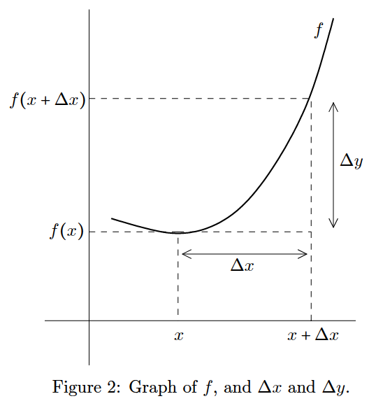

10 Derivatives
Reference: Hase (2022)
The derivative of function \(f\) at a point \(x\) is defined as
\[\cfrac{\text{d}}{\text{d}x} f(x) := \lim \limits_{\Delta x \to 0} \cfrac{\Delta y}{\Delta x} = \lim \limits_{\Delta x \to 0} \cfrac{f(x + \Delta x) - f(x)}{\Delta x}\]

A function is said to be differentiable if the derivative exists at every point of its domain. Here, the notation \(f'(x)\) is also used to indicate de derivative of \(f\) (at point \(x\)).
Note that, from a geometrical standpoint, the derivative at \(x\) corresponds to the tangent of the curve \(f\) at the same point. Therefore,
\[ \cfrac{\text{d}}{\text{d}x} f(x) = \begin{cases} > 0 \ \ \ , \ \ \ \text{function } f \text{ increasing with } x \text{ (at } x \text{)} \\ < 0 \ \ \ , \ \ \ \text{function } f \text{ decreasing with } x \text{ (at } x \text{)} \end{cases} . \]
The case \(\cfrac{\text{d}}{\text{d}x} f(x) = 0\) is especially important since it’s a necessary (although not sufficient) condition to determine the extremal points (local maxima and minima) of differentiable functions.
10.1 Shortened line equation
Reference: Morettin, Hazzan, and Oliveira Bussab (2003)
- \(y = mx + n\)
- \(m = \cfrac{\Delta f}{\Delta x} \approx f'(x)\)
- \(y - y_{0} = m(x - x_{0})\)
10.2 Example of derivative by definition
\(f(x) = x^{2}\)
\(\cfrac{d}{dx} f(x) = [(f(x)]' = \lim \limits_{\Delta x \to 0} \cfrac{f(x + \Delta x) - f(x)}{\Delta x}\)
\(\lim \limits_{\Delta x \to 0} \cfrac{(x + \Delta x)^{2} - x^{2}}{\Delta x}\)
\(\lim \limits_{\Delta x \to 0} \cfrac{x^{2} + 2x \Delta x + (\Delta x)^{2} - x^{2}}{\Delta x}\)
\(\lim \limits_{\Delta x \to 0} \cfrac{\Delta x (2x + \Delta x)}{\Delta x}\)
\(\lim \limits_{\Delta x \to 0} 2x + \Delta x = 2x\)
10.3 General formulas
Reference: Hass, Heil, and Weir (2018) and Morettin, Hazzan, and Oliveira Bussab (2003)
Assume \(f\) and \(g\) are differentiable functions of \(x\).
- Constant: \(c' = 0 \ \ \ , \ \ \ c \in \mathbb{R}\)
- Sum: \((f + g)' = f' + g'\)
- Difference: \((f - g)' = f' - g'\)
- Constant multiple: \((c f)' = c f' \ \ \ , \ \ \ c \in \mathbb{R}\)
- Product: \((fg)' = f' g + f g'\)
- Quotient: \((\cfrac{f}{g})' = \cfrac{f' g - f g'}{g^{2}} \ \ \ , \ \ \ g \ne 0\)
- Power: \((x^{n})' = nx^{n - 1} \ \ \ , \ \ \ n \in \mathbb{R}\)
- Chain rule = \([f(g)]' = f'(g) \times g'\)
- Other (1) = \((\cfrac{1}{f})' = \cfrac{f'}{f^{2}}\)
10.4 Exponential and logarithmic functions
Reference: Hass, Heil, and Weir (2018)
- \((e^{x})' = e^{x}\)
- \((\ln x)' = \cfrac{1}{x}\)
- \((a^{x})' = a^{x} \ln a \ \ \ , \ \ \ \forall x \in \mathbb{R} \mid a > 0 \mid a \neq 1\)
- \((\log_{a} x)' = \cfrac{1}{x \ln a}\)
10.5 Chain rule examples
- \([\sin(2x)]'\)
\([\sin(2x)]' = [f(g)]' = f'(g) \times g'\)
\([f(g)]' = \begin{cases} f = \sin x \Rightarrow f' = \cos x \\ g = 2x \Rightarrow g' = 2 \end{cases}\)
\([\sin(2x)]' = f'(g) \times g' = \cos (2x) \times 2 = 2 \cos(2x)\)
- \([e^{(x^{2})}]'\)
\([e^{(x^{2})}]' = [f^{(g)}]' = f'^{(g)} \times g'\)
\([f^{(g)}]' = \begin{cases} f = e^{x} \Rightarrow f' = e^{x} \\ g = x^{2} \Rightarrow g' = 2x \end{cases}\)
\([e^{(x^{2})}]' = f'^{(g)} \times g' = e^{(x^{2})} \times 2x\)
10.6 Trigonometric functions
Reference: Hass, Heil, and Weir (2018)
- \((\sin x)' = \cos x\)
- \((\cos x)' = - \sin x\)
- \((\tan x)' = \sec^{2} x\)
- \((\sec x)' = \sec x \tan x\)
- \((\cot x)' = - \csc^{2} x\)
- \((\csc x)' = - \csc x \cot x\)
10.7 Inverse trigonometric functions
- \((\arcsin x)' = (\sin^{-1} x)' = \cfrac{1}{\sqrt{1 - x^{2}}} \ \ \ , \ \ \ (|x| < 1)\)
- \((\arccos x)' = (\cos^{-1} x)' = - \cfrac{1}{\sqrt{1 - x^{2}}} \ \ \ , \ \ \ (|x| < 1)\)
- \((\arctan x)' = (\tan^{-1} x)' = \cfrac{1}{1 + x^{2}}\)
- \((\text{arccot} \ x)' = (\cot^{-1} x)' = - \cfrac{1}{1 + x^{2}}\)
- \((\text{arcsec} \ x)' = (\sec^{-1} x)' = \cfrac{1}{|x| \sqrt{x^{2} - 1}} \ \ \ , \ \ \ (|x| > 1)\)
- \((\text{arccsc} \ x)' = (\csc^{-1} x)' = - \cfrac{1}{|x| \sqrt{x^{2} - 1}} \ \ \ , \ \ \ (|x| > 1)\)
10.8 Hyperbolic functions
Reference: Hass, Heil, and Weir (2018)
- \((\sinh x)' = \cosh x\)
- \((\cosh x)' = \sinh x\)
- \((\tanh x)' = \text{sech}^{2} \ x\)
- \((\text{sech} \ x)' = - \text{sech} \ x \tanh x\)
- \((\coth x)' = - \text{csch}^{2} \ x\)
- \((\text{csch} \ x)' = - \text{csch} \ x \coth x\)
10.9 Inverse hyperbolic functions
Reference: Hass, Heil, and Weir (2018)
- \((\sinh^{-1} x)' = \cfrac{1}{\sqrt{1 + x^{2}}}\)
- \((\cosh^{-1} x)' = \cfrac{1}{\sqrt{x^{2} - 1}}\)
- \((\tanh^{-1} x)' = \cfrac{1}{1 - x^{2}}\)
- \((\text{sech}^{-1} \ x)' = - \cfrac{1}{x \sqrt{1 - x^{2}}}\)
- \((\coth^{-1} x)' = \cfrac{1}{1 - x^{2}}\)
- \((\text{csch}^{-1} \ x)' = - \cfrac{1}{|x| \sqrt{1 + x^{2}}}\)
10.10 Differential of a function
Reference: Morettin, Hazzan, and Oliveira Bussab (2003)
\(df = f'(x_{0}) \times \Delta x\), \(df \approx \Delta f\) para pequenos valores de \(\Delta x\).
10.11 Parametric equations
Reference: Hass, Heil, and Weir (2018)
If \(x = f(t)\) and \(y = g(t)\) are differentiable, then
\[ y' = \cfrac{dy}{dx} = \cfrac{dy / dt}{dx / dt} \ \ \ \text{and} \ \ \ \cfrac{d^{2}y}{dx^{2}} = \cfrac{dy' / dt}{dx / dt} \]
10.12 2nd, 3rd, … order derivatives
Reference: Morettin, Hazzan, and Oliveira Bussab (2003)
\(f'(x) \ f''(x) \ f'''(x) \ f^{(4)}(x)\)